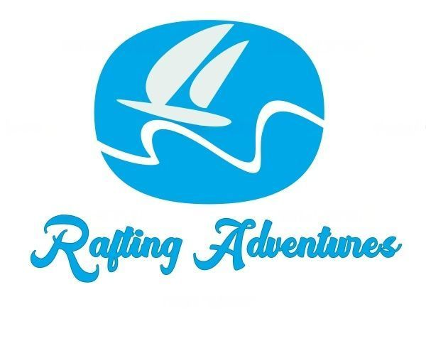

Overview
Purpose
As more people tend to use the internet and make buying choices based on what they see on the internet, for this reason, we, the Rafting Adventures company, reached the decision to create a website for our company with the purpose of building a strong relationship with our potential customers and expand our current borders in order to connect with everyone who wants to experience the incredible service that we offer in this side of the country. We hope that by creating this professional webpage we can build a firm revenue venue, expand our current market share and obtain a better brand positioning among all our customers. We expect to accomplish this by creating the rights resources inside our websites like images, videos, and reviews from customers that can help us create a strong venue of revenue that can only be accomplished in this format. The achievement of this purpose will result in a major benefit for the company because we will be able to increase the annual revenue, expand and improve the company by investing in it which ultimately will improve the experience of the customer in our services creating a positive cycle in which everyone who can participate can gain benefit from it. For these reasons, the purpose of the existence of a well-designed website is a high priority for the company.
Audience
The target audiences for the Adventures Rafting company are young adults either men or women, single or without family who are interested in experiencing nature, traveling, and trying new things. These people are the first primary target, they are between the range of 20 to 35 years old, with a normal financial situation. This target wants to create new experiences and is willing to try dangerous things, this necessity, to create and share new experiences and adventures is something that a city or suburb's regular life is not satisficing entirely, and this is the reason that many of them choose to travel with friends while they are young and live their lives in a different way. The second group or target is families who are searching for an adventure vacation who can remember, this group includes people of many ages, and their financial situation is regularly a good one, the necessity that is not being satisfied for this group is the necessity of connection, stress relief, and adventure. Both audiences engage with the site through a laptop or desktop device, but the first audience tends to use more mobile devices to engage with the company, being this (the young adults) primary and most frequently group for the company, the website should relate to them the most and be optimized for the mobile experience.
Branding
Website Logo
Style Guide
Color Palette
Palette URL:
https://coolors.co/ffffff-ffaa33-003459-007ea7-00a8e8| Primary | Secondary | Accent 1 | Accent 2 |
|---|---|---|---|
| 00a8e8 | FFFFFF | FFAA33 |
Typography
Heading Font: Oxygen
Paragraph Font: Roboto
Normal paragraph example
The best Whitewater Rafting in Colorado, White Water Rafting Company offers rafting on the Colorado and Roaring Fork Rivers in Glenwood Springs. Since 1974, we have been family owned and operated, rafting the Shoshone section of Glenwood Canyon and beyond.
Colored paragraph example
Trips vary from mild and great for families, to trips exclusively for physically fit and experienced rafters. No matter what type of river adventures you are seeking, White Water Rafting Company can make it happen for you.
Navigation
Site Map
Wireframes
Home